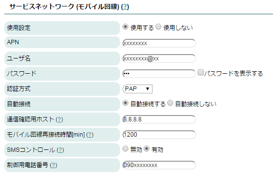
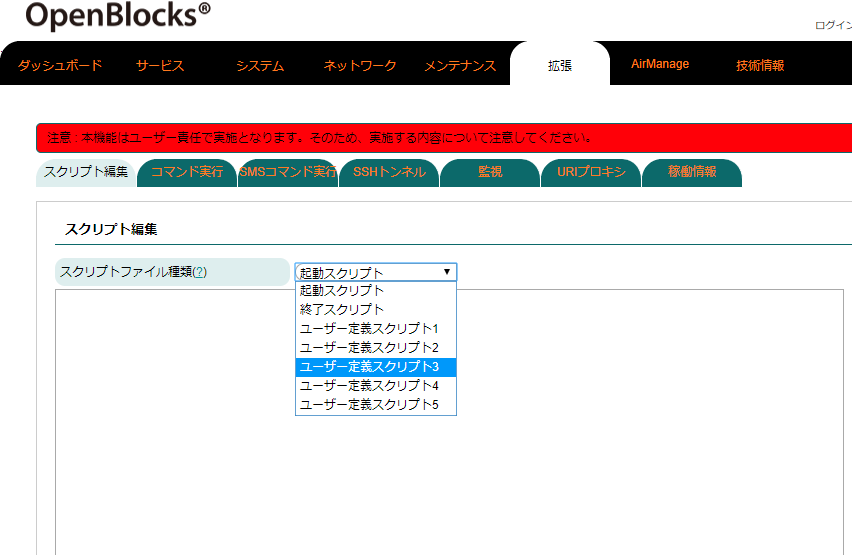
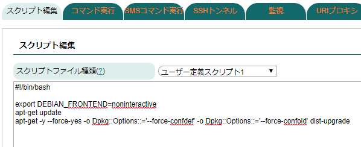
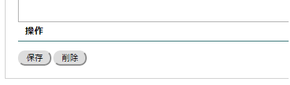
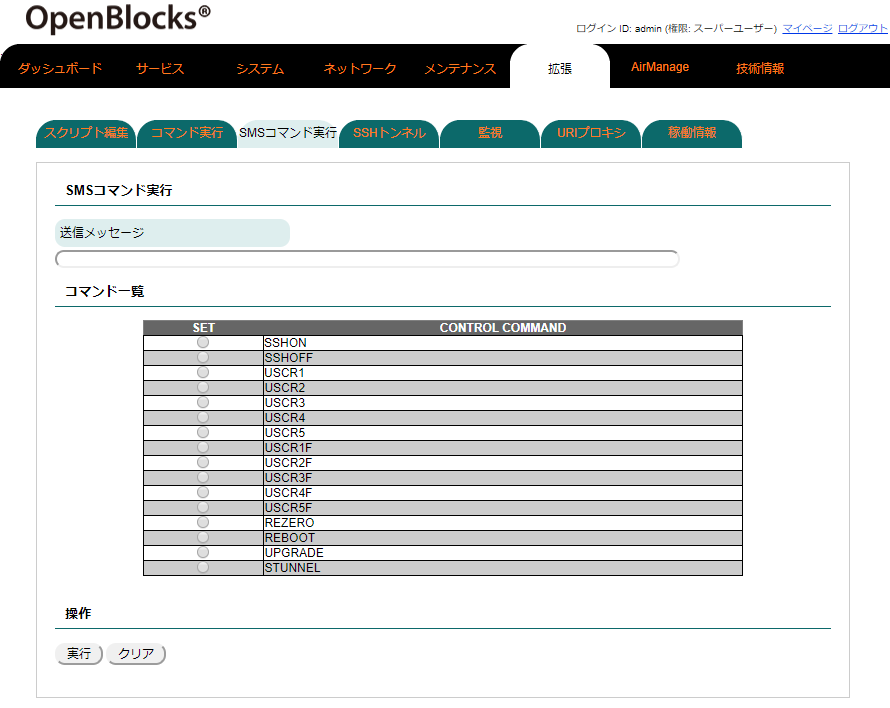

SMSコントロール¶
本装置は一部のモバイル回線モデムモジュールにてSMSをサポートしています。
(モバイル回線契約にSMS機能が無い場合、サポートできません。)
SMSとは、携帯電話で使えるショートメッセージサービスで、最大約70文字前後のメッセージを相手の電話番号向けて送信する機能です。本装置が通常使用しているデータ通信とは異なります。
本装置では、特定のキーワードのSMSを受信することによってデータ通信を開始・停止やシェルスクリプトの実行を行うことが出来ます。
※KDDIキャリアのSIMの場合には利用できません。
SMSコントロールの起動設定¶
SMSコントロールはモバイル回線を使用されている方向けの機能です。 モバイル回線の設定については WEB UIの初期基本設定 の モバイルルーター構成 項を参照ください。

サービスネットワーク(モバイル回線) |
|
|---|---|
項目 |
備考 |
自動接続 |
この設定はどちらでも構いません。 尚、SMSコントロールにてモバイル回線を接続した場合及び網側から回線切断された場合には、再接 続は行われません。 |
SMSコントロール |
「有効」を設定。 |
制御用電話番号 |
SMSコントロールを「有効」に設定すると、表示される項目です。 ここにはSMS制御をするスマホ等の電話番号を入力します。ここに設定した電話番号以外からのSMS は無視されます。 市街局番からの電話番号を入力します。 尚、プライベート回線用のSMSでは4桁等の短い場合があり ます。 尚、","区切りにて複数の制御用電話番号を登録することができます。 |
SMSコントロールのコマンド¶
SMSコントロールには以下のコマンドが組み込まれています。
コマンド |
コマンド内容 |
備考 |
|---|---|---|
CON |
モバイル回線を接続する |
|
COFF |
モバイル回線を切断する |
|
SSHON |
SSHを開放する |
SSH解放後にOSを再起動すると自動的に閉鎖されます。再起動まではSSH解放状態とな るため、利用後は閉鎖してください。 |
SSHOFF |
SSHを閉鎖する |
|
REBOOT |
システムを再起動する |
|
USCR1 ～ USCR5 |
ユーザースクリプトを バックグラウンド実行 |
WEB UIの拡張タブにあるスクリプトエディタで編集可能です。 登録方法については「 SMSユーザ定義スクリプトの登録 」を参照してください。 |
USCR1F ～ USCR5F |
ユーザースクリプトを フォアグラウンド実行 |
|
UPGRADE |
オンラインのアップデート 処理を実行します |
|
STUNNEL |
SSHトンネルを構築 |
SMSでの複数コマンド送信¶
1回のSMSで複数のコマンドを一括で送信可能です。
"CON", "COFF", "SSHON", "SSHOFF", "USCR1F"～"USCR5F", "UPGRADE"はフォアグラウンドで実行されるので、SMSの送信文字列でたとえば以下のように”+でつなぐと順次実行されます。
例)
CON+USCR1F+USCR2F+COFF |
: |
モバイル回線を接続、スクリプト1実行、スクリプト2実行、モバイル回線を切断。 |
CON+SSHON |
: |
モバイル回線を接続してからSSHを開放します。 |
SSHOFF+COF |
: |
SSHを閉鎖してからモバイル回線を切断します。 |
※"USCR1" ～ "USCR5"及び"STUNNEL"はバックグラウンド実行になるため、並列処理になります。
SMSユーザ定義スクリプトの登録¶
ユーザが定義したスクリプトをWEB UIにて登録・編集が出来ます。尚、本機能はLinuxのシェルスクリプトをご自身で作成できる方向けの機能です。スクリプトの実施内容については弊社サポート対象外となります。
スクリプト作成及び編集は「拡張」タブ内にあるスクリプト編集にて行います。

スクリプト編集 |
|---|
スクリプトの種類 |
プルダウンメニューから編集するスクリプトを選んでください。 メニュー中にある「起動スクリプト」には本装置のOS起動時に自動実行させるスクリプトを記述することが出来ます。 尚、起動スクリプトに記載されたスクリプトはバックグラウンドで実行されます。 |

この欄にスクリプトを記述します。 このスクリプト例では各アプリケーションのアップデートが行えます。但し、インターネット環境内です。 (各アプリケーションのセキュリティアップデートは頻繁に行われる為、おすすめのスクリプトです。) |

スクリプトが完成したら画面左下側にある保存ボタンを押してください。 また、不要なスクリプトは削除ボタンにて消去できます。 |
※上記の参考例では、遠隔地にある本装置に対してSMS経由によるOSパッチを当てる内容となっております。
SMSコントロールコマンドのダイレクト実行¶
本装置に登録されたSMSコントロールコマンドは通常携帯電話で命令を発行し実行させますが、WEB UIからも直接実行させることが出来ます。

SMSコマンド実行 |
|
|---|---|
項目 |
備考 |
送信メッセージ |
ここへ疑似的に送信するSMSコマンドを入力します。 |
コマンド一覧 |
SMSコマンドの一覧のSET部を選択すると送信メッセージに対象のコマンドが追加されます。 2個目以降については自動で"+"が挿入されます。 ※"CON"及び"COFF"はモバイル回線を「使用する」に設定している場合にのみ表示されます。 |
保存 |
送信メッセージに入力されたコマンドを本装置に疑似送信します。 |
クリア |
送信メッセージの中身を消去します。 |